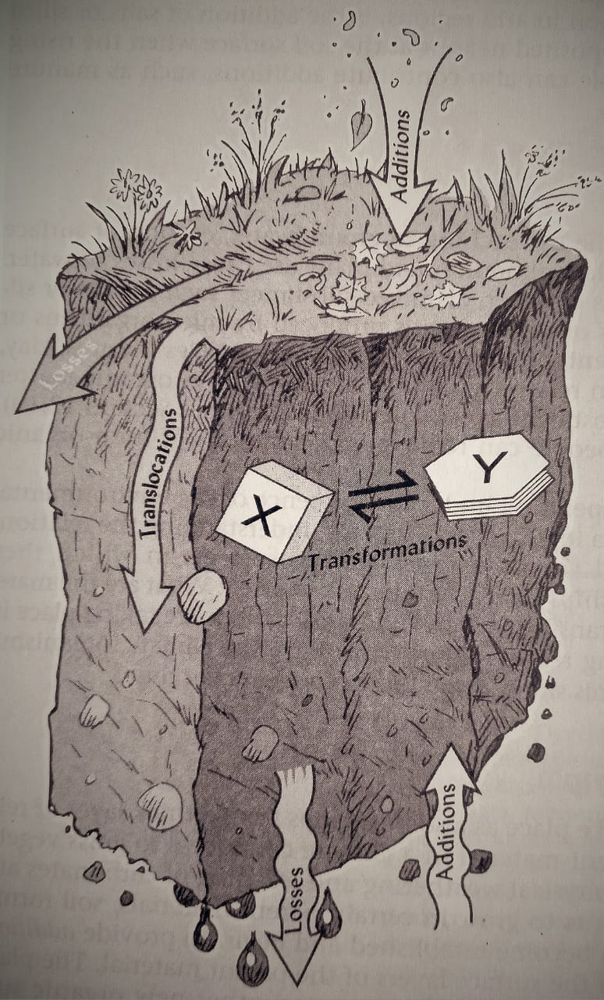
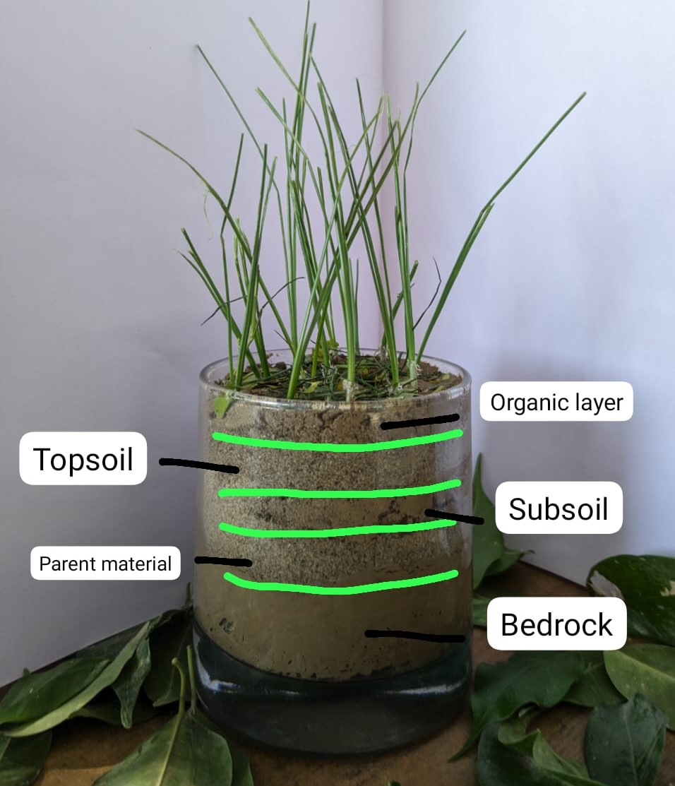
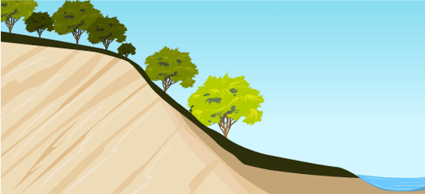
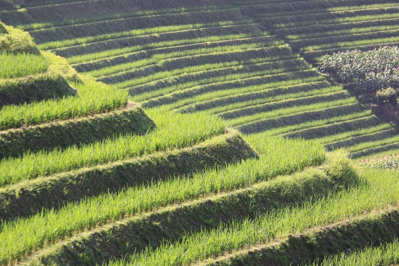
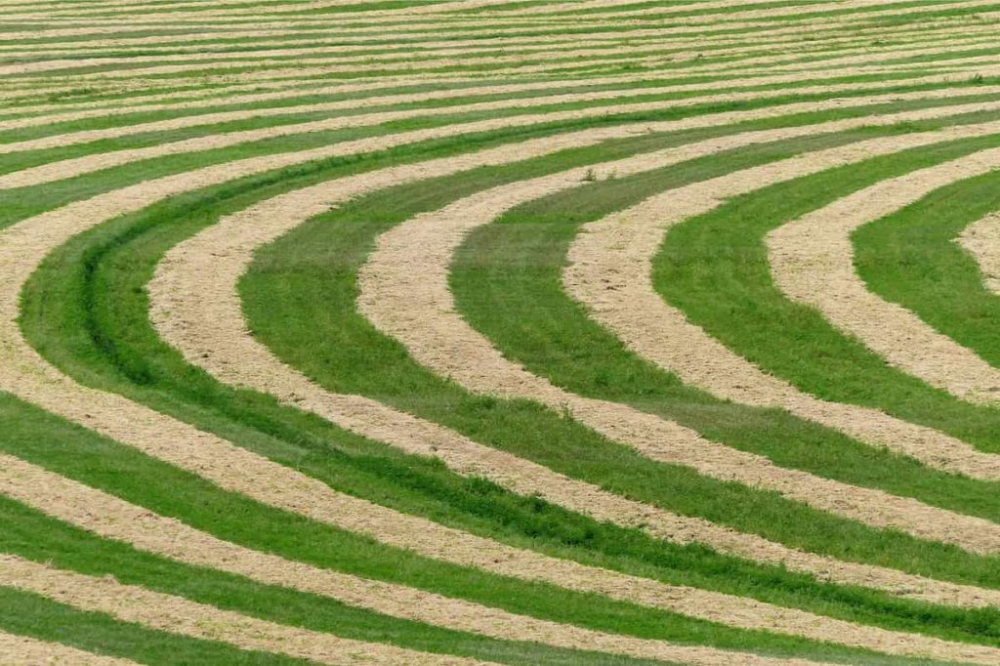
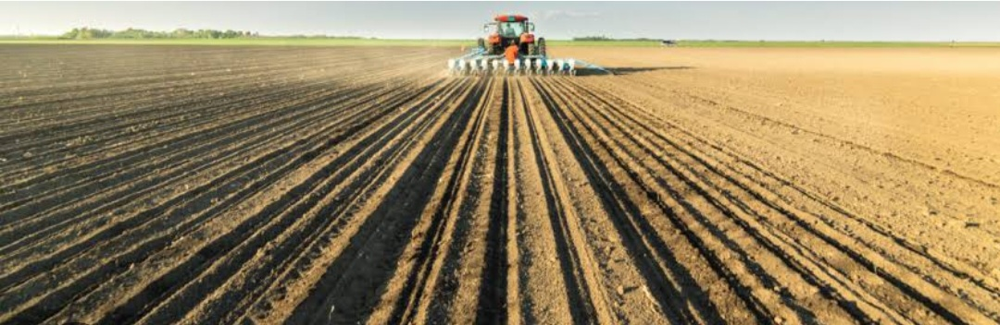
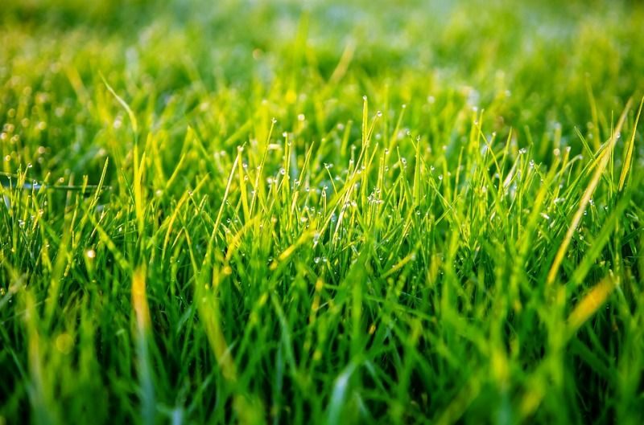
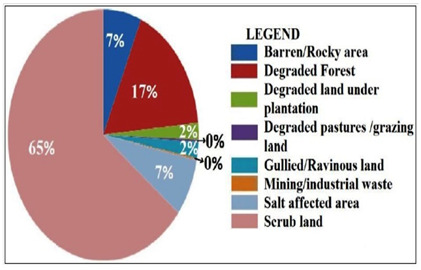

SOIL EROSION....an environmental concern.
This story has been started from back millions years. After millions of years of research, scientist reaches to the conclusion that
How Exactly Soil is Formed ??
The mineral from which the soil is formed is called as the parent material.The Rocks are the source of all soil minerals.These parent material is chemically or physically weathered and transported which then deposits to form layers of soil. Usually, the bedrock is the parent material but there have been cases where soil gets transported due to factors like the wind and water. Now the actual process of formation of soil is a cumulative combination of a number of processes. Soil formation also known as Pedogenesis is first kicked off by weathering and variations come according to the weather conditions.
The agents through which soil is been weatherd and transported are
Factors influencing Soil Formation
As we known that the soil is collection of individual soils, each with distinctive profile characteristics. After great observations and much careful subsequent field and laboratory research led to the recognition of five major factors that control the formation of soils.
- Biota (living organisms, especially native vegetation, microbes, soil animals)
- Climate (primarily precipitation and temperature)
- Parent materials (geographical or organic precursors of the soil)
- Topography (slope,aspect,and landscape position)
- Time (the period of time since the parent materials began to undergo soil formation)
Four basic processes of Soil Formation

The Soil Profile
At each location on the land, the Earth's surface has experienced a particular combination of influences from the five soil-forming factors, causing a different set of layers(horizons) to form in each part of thr landscape, thus slowly giving rise to the natural bodies we call soils. Each soil is characterized by a given sequence of these horizons. A vertical exposure of this sequence is termed as soil profile
Identification of various soil horizons
- O Hozizon (organic layer)
- A Horizon (topsoil)
- E Horizon (eluviated layer)
- B Hozizon (subsoil)
- C Horizon (parent material)
- R Horizon (bedrock)

Soil Erosion
The wind crosses the brown land, unheard ...
-T.S. Eliot, The Waste Land
No soil phenomenon is more destructive worldwide thaan the erosion caused by wind and water. Since pre-historic times people have brought the scourge of soil erosion upon themselves, suffering impoverishment and hunger in its wake. Past civilization have disintegrated as their soils, once deep and productive, washed away, leaving only thin, rocky relices of the past. It is hard to imagine that agricultural communities once flourished in the now nearly barren hills in parts of india, Greece, Lebanon, or Syria
Combating soil erosion is everybody's business. Fortunately, much has been learned about the mechanisms of erosion and techniques have been developed that can effectively and economically control soil loss in most situations. This website program will equip you with some of the concepts and tools you will need to do your part in solving this pressing word problems.
Soil Erosion is defined as the detachment of soil particles, their transportation from one place to another and deposition elsewhere through water, wind, coastal waves, snow, gravity and other forces. Soil erosion involves three steps i.e.
(i) detachment of soil particles from the main soil body (ii) their transportation by splashing, floating, rolling, dragging and (iii) their deposition at another place

A. On-Site and Off-Site effects of Accelerated Soil Erosion :
Erosion damages the site on which it occurs and also has undesirable effects off-site in the larger environment. The off-site costs relate to the effects of excess water, sediments, and associated chemicals on downhill and downstream environments. While the costs associated with either or both of these types of damages may not be immediately apparent, they are real and grow with time. Land owners and society as a whole must eventually foot the bill.
A.1. Types of On-Site Damages
The most obviously damaging aspect of erosion is the loss of soil itself. In reality, the damage done to the soil is greater than the amount of soil lost would suggest, because the soil material eroded away is almost always more valuable than that left behind. Not only are surface horizons eroded while less fertile subsurface horizons remain untouched, but the quality of the remaining topsoil is also impaired. Erosion selectively removes organic matter and fine minerals particles, while leaving behind mainly relatively less active, coarser fractions.

A.2. Types of Off-Site Damages
Erosion moves sediments and nutrients off the land, creating the two most widespread water pollution problems in our rivers and lakes. The nutrients impact water quality largely through the process of eutroophication caused by excessive nitrogen andd phosphorus. In addition to nutrients, sediment and runoff water may also carry toxic matals and organic compounds, such as pesticides. The sediments itself is a major water pollutant, causing a wide range of environmental damages

Types of Soil Erosion- through the mechanics of water erosion
Soil erosion by water is fundamentally a three-step process
- detachemnt of soil particles from the soil mass.
- Transportation of the detached particles downhill by floating, rolling, dragging, and splashing.
- Deposition of the transported particles at some place lower in elevation.
On comparatively smooth soil surfaces, the beating action of raindrop causes most of the detachment. Where water is concentrated into channels, the cutting action of turbulent, flowing water detaches soil particles. In some situation, freezing -thawing action also contribute to soil detachment.
There are basically three types of water erosion
(i) Sheet Erosion (ii) Rill Erosion (iii) Gully Erosion
(i) Sheet Erosion
In
sheet erosion, splashed soil is removed more or less uniformly,except that tiny columns of soil often remain where pebbles intercept the raindrops.
Sheet erosion is relatively uniform erosion from the entire soil surface. Note that the perched stones and pebbles have protected the soil underneath from sheet erosion.

(ii) Rill Erosion
However, as the sheet flow is concentrated into tiny channels(termed
rills),
rill eroson becomes dominant. Rills are espically common on bare land, whether newly planted or in fallow. Rills are channels small enough to be smoothed by normal tillage, but the damage is already done-the soil is lost. When sheet erosion takes place primarily between irregularly spaced rills, it is called
interrill erosion

(iii) Gully Erosion
Where the volume of runoff is further concentrated, the rushing water cuts deeper into the soil, deepening and coalescing the rills into larger channels termed
gullies. This is
gully erosion. Gullies on cropland are obstacles for tractors and cannot be removed by ordinary tillage practices. All three types may be serious, but sheet and rill erosion, although less noticeable than gully erosion, are responsible foe most of soil moved.

Soil Erosion- through the mechanics of wind
Soil is generally classified into three categorires. These are as follow -
- Clay : this is the finest type of soil,with a diameter of less than 2 micrometer.A micrometer is a thousandth of a millimeter.
- Slit : this has a diameter of 2-60 micrometers.
- Sand : soil of this size and above can be seen with our naked eyes.
Through wind erosion, these components of soil get detached because they are very light in size and are present on the O-horizon i.e. topmost layer of the soil profile. These components are responsible for providing fertility to the soil, which eventually leads to have good yield of crop but due to wind erosion , these components get easily detached and hence leads to decrease in fertility of the soil. Through regular action of wind erosion, the fertile land get converted into barren piece of land.
Soil Conservation Measures
The following soil conservation measures may be adopted for controlling soil erosion, depending on the degree and length of the slope and physical configuration of the land
A. Mechanical Measures
(i) Contour Bunds
Contour bunds are mechanical barrier built across the slope for safe diversion of excess runoff and retention of eroded soil. The land area in between the two bunds gets levelled in due course of time. Due to deposition of eroded soilalong the bunds, the latter takes the shape of a riser. These risers should be planted with grasses to check their erosion.In this practise, a series of bunds divide the area into strips and act as barriers to the flow of water, thus reducing the amount and velocity of the run-off and allowing better infiltration of water into the soil.

(ii) Gully Control Structures
Gully control structures are provided to (i) reduce the erosive velocity of runoff water, (ii)facilitate establishment of vegetation, and (iii) provide protection at points that cannot be adequately protected by other methods. Loose boulder check-dams perform well in gullies which do not carry much runoff and it also helps in silt deposition, thereby helping the stabilization of gully beds. Permanent gully control structures are constructed to control the overfalls either at gully head or in gully bed. Erosion from the extending beads and sides of gully and main channel are the major sources of sediment. There is also a need to construct diversion bunds to divert surplus water to water harvesting structures or to the grassed waterways.

(iii) Contour Trenches
Contour trenches are dug out, piling up the dug-out earth on lower side of the trench, for trapping sediment and runoff at the early stage of their movement. These trenches also improve soil moisture and favour quick growth of trees and grasses.

(iv) Stream Bank and Torrents Controls
During the rainy season, when fast running streams take a turn in some other direction, they cut the soil and make caves in the banks.The vulnerable stream banks should be protected by providing spurs and retaining walls, etc. To control torrents, structures like bar rages, paved channels, etc. need to be provided.

(v) Cropping Systems
Crops with the ability to develop canopy quickly provide an early protection to the soil. Inter planting of erosion resistant crops like cowpea, soybean, etc, are also useful. Strip cropping of erosion resistant legumes along with cereals can conserve rain water and reduce the velocity of runoff.Alley cropping is a form of inter-cropping in which crops are planted between rows of trees or shrubs. This is also called
Agro Forestry. Even when the crop is harvested, the soil is not fallow because trees and shrubs still remain on the soil holding the soil particles and prevent soil erosion.
(vi) Contour Cultivation
Contour cultivation reduces the runoff to a large extent, thereby reducing the soil and nutrient losses. Contour cultivation as well as furrows and ridges have been found useful.On gentle slopes, crops are grown in rows across, rather than up and down, a practise known as contour farming. Each row planted horizontally along the slope of the land acts as a small dam to help hold soil and slow annd slow loss of soil through run-off water.

(vii) Tillage
Low intensity tillage favours consolidation of soil through better structure, infiltration and pore distribution. This imparts erosion resistance. A study of conventional method of cultivation of maize with zero tillage, with or without live mulch, has shown that runoff and soil losses are greatly reduced with low intensity tillage (Bharadwaj. 1998).

(viii) Grasses
Grasses are perhaps the best friend of soil conservationists. Low and evenly distributed canopy and fibrous root systems with much soil binding capacity make grasses highly effective in controlling soil erosion. The performance of various grass species in controlling soil erosion and runoff losses at 9% and 11% slopes. The selection of grasses should be based on their production potential considering edaphic conditions and local preferences.

B. Control of Soil Erosion through Wind Erosion
(i) Tillage
Certain conservation tillage practices were used for wind erosion control long before they became popular as water erosion control practices. Keeping the soil surface rough and maintaining some vegetative cover is accomplished by using appropriate tillage practices. However, the vegetation should be well anchored into the soil to prevent it from blowing away. Stubble mulch has proven to be effective for this purpose. The effect of tillage depends not only on the type of implement used, but also on the timing of the tillage operation. Tillage can greatly reduce wind erosion if it is done while there is sufficient soil water to cause large clods to form. Tillage on a dry soil may produce a fine, dusty surface that aggravates the erosion problem. Tillage to provide for a cloddy surface condition should be at right angles to the prevailing winds.
(ii) Barriers
Barriers such as shelter belts are effective in reducing wind velocities for short distances and for trapping drifting soil. Various devices are used to control blowing of sands, sandy loams, and cultivated peat soils (even in humid regions). Wind breaks and tenacious grasses and shrubs are especially effective. Picket fences and burlap screens, though less efficient as windbreaks than such trees as willows, are often preferred because they can be moved from place to place as crops and cropping practices are varied. Rye, planted in narrow strips across the field, is sometimes used on peat lands and on sandy soils. Narrow rows of such perennial grasses as tall wheat grass are being evaluated for a combination of wind erosion control and capturing of winter snows in the Northern Plains states.
Extent of Soil Erosion in India
A precise estimation of the extent of land affected by soil erosion is still lacking. As per earlier estimates, out of 305.9 Mha of the re- ported area, about 50% (145 Mha) needs conservation measures and about 25% of the reported utilizable land is precariously degraded, needing immediate soil conservation measures. This includes sub humid and per humid regions, Western Ghats, coastal and north-eastern hill regions afflicted with severe erosion, and facing soil loss of 20-40 tonnes/ha/year.
Agricultural land in major parts of the country suffers from the decline in fertility due to loss of soil matrix which produces runoff. These areas need conservation for sustaining production. For example, in Maharashtra, over 70% of the cultivated land has been affected by erosion in varying degrees and 32% of the highly eroded land is no longer cultivable. Inthe Sholapur district, nearly 17% of the land of medium depth (> 45 cm) was converted into shallow soils (< 45 cm) during 1870 to 1945. Similarly, in the districts of Akola, Buldhana and Yeotmal, the number of fields with less than 37.5 cm soil depth increased during the same period by 54%, 16% and 8%, respectively. As much as 2.68 Mha land is already under ravines scattered all over India and is a constant threat to the adjoining fertile cultivated lands.
In the Himalayan region, landslides and landslips pose a very serious problem due to improper land management. The landslide disasters in the winter of 1969 in the Darjeeling district of West Bengal, and in 1998 in the Pithoragarh district of Uttarakhand are eye openers of future potential hazards. The erosion problem along the mountain roads is assuming alarming proportions. The Border Road Organization spends huge resources to stabilize the slopes along the highways for keeping these important lines of communication serviceable.
